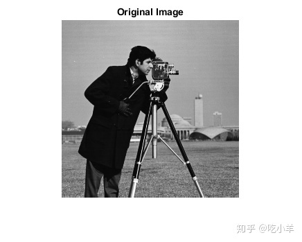
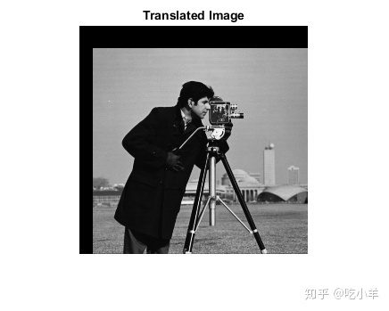

Home
本示例说明如何使用imtranslate函数对图像执行平移操作。平移操作将图像在x或y方向或两者上移动指定数量的像素。
将图像读入工作区。
I = imread('cameraman.tif');
显示图像。图像的大小为256 x 256像素。默认情况下，imshow显示图像的左上角坐标为（0,0）。
figure
imshow(I)
title('Original Image')

平移所述图像，在X -方向移位图像15个像素，在ÿ -方向移位25个像素。请注意，默认情况下，imtranslate在原始256 x 256图像的边界（或限制）内显示转换后的图像。这导致某些移位的图像被剪切。
J = imtranslate(I,[15, 25]);
显示移位的图像。图像的大小为256 x 256像素。
figure
imshow(J)
title('Translated Image')

设置'OutputView'参数为'full'，防止剪切平移的图像。新图像的大小为281 x 271像素。
K = imtranslate(I,[15, 25],'OutputView','full');
显示平移的图像。
figure
imshow(K)
title('Translated Image, Unclipped')
======================================================================
我的测试结果及程序
下面是我测试的代码：

注：本文根据MATLAB官网内容修改而成。